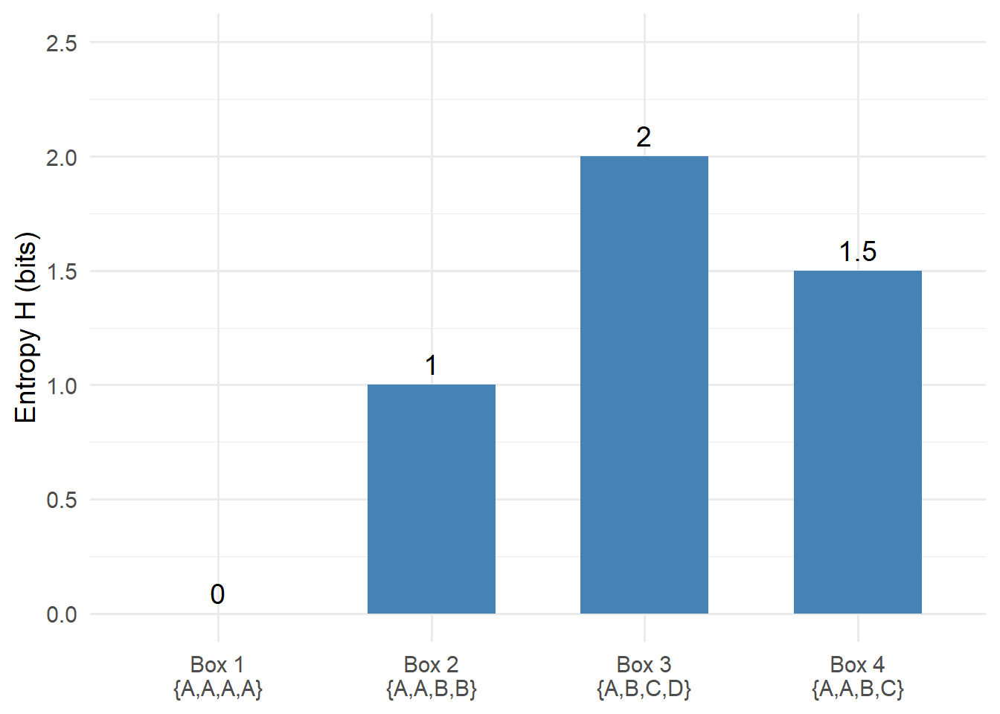
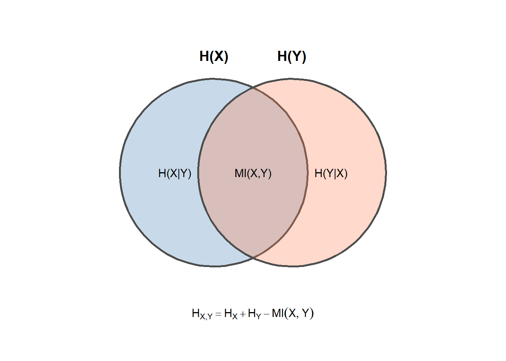

6 Information Theory
6.1 Introduction
The preceding chapters of Part 1 have introduced exploratory data analysis from a geometric perspective: scatter plots, conditional distributions, clustering of observations, and simulation. This chapter takes a different approach, introducing concepts from information theory that provide an alternative lens for understanding relationships among variables.
Information theory, developed by Claude Shannon in 1948, provides a mathematical framework for quantifying uncertainty and the information gained when uncertainty is resolved. These concepts have become foundational in machine learning, appearing in contexts ranging from decision tree construction to neural network training to model comparison. Although subsequent chapters of this book do not explicitly build on information-theoretic foundations, students who pursue specialized studies in machine learning will encounter these ideas repeatedly.
This chapter thus serves as a coda to Part 1: a self-contained introduction to conceptual vocabulary that will prove valuable in later studies.
6.2 Entropy
6.2.1 Background
The term “entropy” was defined in the mid-19th century (with the emergence of Statistical Mechanics) as a measure of the disorder of a physical system. In 1948 (with the emergence of Information Theory) Claude Shannon introduced the same term and equivalent mathematical definition as a measure of uncertainty.
6.2.2 Yes-No Questions
Let’s illustrate the concept of entropy with a variant of the game “Twenty Questions”. The contestant is presented with a box of tickets, each ticket bearing a single capital letter of the English alphabet. The contestant is shown the box, and thus knows the number of tickets bearing each letter. (It may happen that only a few of the possible 26 letters actually appear in the box.) The game begins with the random drawing of a ticket not visible to the contestant. The contestant may ask yes-no questions about the ticket until the contestant determines with certainty the letter written on the ticket. (The contestant does not guess but rather comes to a firm conclusion.) The ticket is put back in the box, ending the first round of the game. Subsequent rounds of the game are exactly like the first, a new ticket is drawn at random; it’s letter must be deduced by the contestant through a sequence of yes-no questions. The contestant is evaluated on the average number of questions required to determine the letter on a randomly drawn ticket.
We suppose that contestant devises the most informative sequence of questions possible. Consequently, the average number of required questions is a measure of the difficulty presented by the set of tickets in the box, that is, of the uncertainty of the value of a randomly drawn ticket.
Here are some different scenarios.
Box 1: If the contents of the box were \(\{A, A , A, A \}\) then the contestant needn’t spend any questions to determine with certainty the value of a randomly drawn ticket. The average number of required questions would be zero.
Box 2: If the contents of the box were \(\{A, A , B, B \}\) then the contestant would require one question to determine with certainty the value of a randomly drawn ticket. The average number of required questions would be one.
Box 3: If the contents of the box were \(\{A, B , C, D \}\) then the contestant would require two questions to determine with certainty the value of a randomly drawn ticket. The average number of required questions would be two.
Box 4: Now consider the box \(\{ A, A, B, C \}\). The contestant’s first question might be whether the ticket-value is \(A\), the most probable value. In half the rounds the answer would be a definitive yes, limiting the number of questions to 1. In the other half of the rounds, a single follow-up question would be required to identify the ticket-value with certainty. Averaged across rounds the required number of questions would be \((\frac{1}{2} \times 1) + (\frac{1}{2} \times 2) = \frac{3}{2}\).
In general, consider a binary search strategy. Partition the set of all tickets into two subsets of distinct ticket-values, so that the two subsets contain a nearly equal number of tickets (to the extent possible). Devise the first question to determine to which of the two subsets the randomly drawn ticket belongs. Now partition the identified subset into two further subsets distinguished by ticket-values, again of equal or nearly equal size. Devise the second question to determine which of these two subsets is the origin of the randomly drawn ticket. Continue in this way until the randomly drawn ticket is identified.
Under the binary search strategy the maximum number, say \(\mu\), of required questions is a function of the number, say \(K\), of distinct ticket-values, namely, \(\mu\) is the smallest integer such that \(\mu \ge \log_2(K)\). But that is a worst-case scenario: \(\mu\) is generally greater than the average number of required questions, as illustrated by Box 4.
6.2.3 Definition
The mathematical definition of entropy (usually denoted \(H\)) gives a lower bound on the average number of required questions that follow an optimal strategy. For a finite probability distribution \(p_{\bullet} = (p_1, p_2, \ldots, p_K)\) the mathematical definition is as follows.
\[ \begin{align} H(p_1, p_2, \ldots, p_K) \\ &= \sum_{k = 1}^K { p_k \times \log_2(\frac{1}{p_k}) } \\ &= - \sum_{k = 1}^K { p_k \times \log_2(p_k) } \\ \\ & \text{with } p_k = \text{probability of drawing value } k \\ & \text{and } K = \text{number of distinct values} \end{align} \qquad(6.1)\]
(This definition of \(H\) uses a base-2 logarithm \(\log_2()\) to match our yes-no question game. The units of this \(H\) are the required number of yes-no questions, that is, binary digits, or “bits”. \(H\) is sometimes defined using the natural logarithm \(\log_e()\) yielding a unit called “nats”. Changing the base of the logarithm changes \(H\) by a multiplicative constant.)
For the first box in the game above, we have a single value \(A\), which is thus drawn with probability one, which yields \(H = 0\).
For the second box we have two values, each drawn with probability \(\frac{1}{2}\), so \(H = 1\).
For the third box we have four values, each drawn with probability \(\frac{1}{4}\), so \(H = 2\).
For the fourth box, we calculated that the average number of required questions is \(\frac{3}{2}\), which is the value of \(H\).
The figure below summarizes the entropy values for these four boxes.
Entropy is zero when there is no uncertainty (Box 1), and increases with the number of equally likely outcomes. Box 4 has intermediate entropy: the unequal probabilities mean that, on average, fewer questions are needed than for Box 3’s uniform distribution.
6.2.4 \(H_{X, Y}\) for independent \((X, Y)\)
So far we’ve discussed entropy with respect to a single random variable. We now extend the discussion to a pair of random variables. Let’s change the game so that each ticket now bears both a letter and a positive integer.
Let our first example be \(\{ A_1, A_1, B_1, C_1, A_2, A_2, B_2, C_2 \}\), in which the set of letter-tickets \(\{ A, A, B, C \}\) is duplicated, initially with the subscript 1, and then with the subscript 2. Drawing a ticket at random from this box is equivalent to drawing a letter at random from \(\{ A, A, B, C \}\) and then independently drawing a number from \(\{ 1, 2 \}\). The contestant may as well first ascertain the letter and then ascertain the number, requiring on average \(\frac{3}{2} + 1\) questions.
More generally, suppose we have a pair \((X, Y)\) of independent random variables that take on a finite set of values. Then
\[ \begin{align} P(X = x_j, \; Y = y_k) \\ &= P(X = x_j) \times P(Y = y_k) \\ \end{align} \]
or more succinctly
\[ \begin{align} p_{X, Y}(j, k) &= p_X(j) \times p_Y(k) \end{align} \]
The entropy of the distribution of \((X, Y)\) is:
\[ \begin{align} H_{X, Y} &= H(\; \{ p_{X, Y}(j, k) \} \;) \\ &= - \sum_{j = 1}^J{\sum_{k = 1}^K {p_{X, Y}(j,k) \times log_2(\; p_{X, Y} (j,k) \;)}} \\ &= - \sum_{j = 1}^J{\sum_{k = 1}^K {p_X(j) \times p_Y(k) \times log_2(\; p_X(j) \times p_Y(k) \;)}} \\ &= - \sum_{j = 1}^J \sum_{k = 1}^K p_X(j) \times p_Y(k) \times \{ \; log_2(p_X(j) + log_2(p_Y(k) \; \} \\ &= H_X \times \sum_{k = 1}^K p_Y(k) \; + \; \sum_{j = 1}^J p_X(j) \times H_Y \\ &= H_X + H_Y \end{align} \qquad(6.2)\]
In words, when \((X, Y)\) are independent, their joint entropy equals the sum of their respective entropies.
6.3 Mutual Information
Now consider the case where \((X, Y)\) are dependent. Suppose, for example, that our box of tickets is \(\{ A_1, A_2, B_1, C_2 \}\). The marginal distribution of letters remains \(\{A, A, B, C \}\) and the marginal distribution of numbers is \(\{1, 2, 1, 2\}\) which is equivalent to the box \(\{1, 2\}\) of the previous example.
In the previous example, had the contestant first determined the subscript on the randomly drawn ticket, that information would not have affected the subsequent process of determining the letter. The average number of required questions would remain \(1 + \frac{3}{2}\).
Now, however, using the first question to determine the subscript reduces the letter possibilities to either \(\{A, B\}\) or else \(\{A, C\}\). A single additional question is required to determine the letter. Thus the total number of required questions is 2, which equals the entropy value \(H\).
Let’s continue to suppose that \((X, Y)\) are dependent. An ill-informed contestant might adopt the strategy optimal for the independent case, attacking one variable at a time. But this strategy would no longer be optimal. There would now be instances in which knowledge of one variable would reduce the average number of additional questions required to determine the value of the other variable. Thus the joint entropy \(H_{X, Y}\) never exceeds the entropy \(H_X + H_Y\) of the independent case.
The reduction in entropy when the distribution of \((X, Y)\) is changed from independent to dependent (while retaining the original marginal distributions) goes by different names, including “information gain” and (less ambiguously) “mutual information”.
We define mutual information \((MI)\) as this reduction.
\[ \begin{align} MI_{X, Y} &= H_X + H_Y - H_{X, Y} \\ \end{align} \qquad(6.3)\]
\(MI\) is non-negative, and is zero when \((X, Y)\) are independent.
The relationship between joint entropy and mutual information can be visualized as overlapping regions:

The left circle represents the entropy of \(X\); the right circle represents the entropy of \(Y\). Their overlap—the mutual information \(MI(X,Y)\)—is the reduction in uncertainty about one variable gained by knowing the other. When \(X\) and \(Y\) are independent, the circles do not overlap: \(MI = 0\) and \(H_{X,Y} = H_X + H_Y\).
6.4 KL Divergence
Continuing from the discussion of mutual information, suppose that an ill-informed contestant has optimized their questioning strategy for the box \(\{ A_1, A_1, B_1, C_1, A_2, A_2, B_2, C_2 \}\), in which letters and numbers occur independently, when in fact the box is \(\{ A_1, A_2, B_1, C_2 \}\). The contestant’s strategy requires an average of \(\frac{5}{2}\) questions to determine the randomly drawn letter-number combination with certainty, but for the actual box one requires just 2 questions. The misinformation about the box from which tickets are randomly drawn costs the contestant, on average, \(\frac{1}{2}\) per question more than necessary.
Kullback-Liebler divergence is a mathematical representation of this phenomenon. It is defined as follows.
\[ \begin{align} KL(P \; || \; Q) \\ &= E_P \left( \log_2 \left( \frac{ 1 }{ Q(X) } \right) \right) - E_P \left( \log_2 \left( \frac{ 1 }{ P(X) } \right) \right) \\ &= E_P \left( \log_2 \left( \frac{ P(X) }{ Q(X) } \right) \right) \\ &= \sum_{ \{x : P(x) > 0 \}} P(x) \times \log_2 \left( \frac{P(x)}{Q(x)} \right) \\ \\ & \text{with } P(x) = \text{reference probability mass function} \\ & \text{and } Q(x) = \text{alternative probability mass function} \\ \end{align} \qquad(6.4)\]
In the example above, \(P(\cdot)\) is the probability of drawing any given letter-number combination from \(\{ A_1, A_2, B_1, C_2 \}\), and \(Q(\cdot)\) is the corresponding probability for \(\{ A_1, A_1, B_1, C_1, A_2, A_2, B_2, C_2 \}\). Here is the tally of the sum defining \(KL(P \; || \; Q)\).
| x | P(x) | Q(x) | log2_ratio | term |
|---|---|---|---|---|
| A_1 | 0.25 | 0.250 | 0 | 0.00 |
| B_1 | 0.25 | 0.125 | 1 | 0.25 |
| C_1 | 0.00 | 0.125 | -Inf | 0.00 |
| A_2 | 0.25 | 0.250 | 0 | 0.00 |
| B_2 | 0.00 | 0.125 | -Inf | 0.00 |
| C_2 | 0.25 | 0.125 | 1 | 0.25 |
For purposes of illustration the table above includes any value \(x\) assigned positive probability by either \(P(\cdot)\) or \(Q(\cdot)\), even those for which \(P(x) = 0\) and therefore do not contribute to the KL divergence, \(KL(P \; || \; Q)\). Also note that the sum of the terms, that is the KL divergence, is indeed \(\frac{1}{2}\). We will return to KL divergence in subsequent discussions.
6.5 Where These Ideas Appear in Machine Learning
Although this book does not explicitly build on the information-theoretic concepts introduced here, students pursuing machine learning will encounter them repeatedly. The following are notable examples.
Cross-entropy loss. The standard loss function for classification tasks is cross-entropy, which measures the KL divergence between the true label distribution (typically one-hot encoded) and the model’s predicted probability distribution. Minimizing cross-entropy loss is equivalent to maximizing the likelihood of the observed labels under the model.
Decision trees and information gain. Decision tree algorithms select splitting features by maximizing information gain—the reduction in entropy achieved by partitioning the data on a given feature. Random forests and gradient-boosted trees inherit this foundation.
Feature selection. Mutual information provides a model-agnostic measure of the dependence between a candidate feature and the target variable. Unlike correlation, mutual information captures nonlinear relationships.
Variational inference. Variational autoencoders (VAEs) and other latent-variable models are trained by minimizing KL divergence between the approximate posterior and the true posterior distribution.
Model comparison. KL divergence and related measures (such as the Jensen-Shannon divergence) are used to compare probability distributions in contexts ranging from topic modeling to generative adversarial networks.
Understanding entropy, mutual information, and KL divergence equips students with conceptual vocabulary that recurs throughout the machine learning literature.
6.6 Team Exercises
Entropy, Discrete Uniform: If Box 5 is \(\{ A, B, C, D, E \}\), how many questions are required, on average, to determine with certainty the ticket that has been randomly drawn? What is the entropy \(H\) of this box? More generally, calculate \(H\) for a box \(\{ x_1, x_2, \ldots, x_K \}\) that contains \(K\) tickets, each having a unique value.
Entropy, UCB Admissions: Consider a box of tickets that matches the UC Berkeley admissions data. The number of tickets in the box is the number of applications in the data. Each ticket has three markings: either “Male” or “Female” to denote the sex of the applicant; either “Admitted” or “Rejected” to denote the decision made on the application; and one of \(\{ A, B, C, D, E, F \}\) to denote the department that made the decision.
Restricting attention to just the “Admitted” or “Rejected” marking, calculate \(H_{\text{decision}}\).
Now calculate \(H_{\text{decision, sex}}\) and the mutual information \(MI_{\text{decision, sex}}\).
How would you formulate the information gained in the analysis of sex bias by including departmental admission rates?
Cross-entropy intuition: Suppose you are training a classifier that outputs predicted probabilities for three classes. For a single observation whose true class is class 1, compare the cross-entropy loss when the model predicts \((0.9, 0.05, 0.05)\) versus \((0.6, 0.2, 0.2)\) versus \((0.33, 0.33, 0.34)\). What happens to the loss as the predicted probability for the true class approaches zero?
Mutual information for feature selection: Using a dataset of your choice (or a simulated dataset), compute the mutual information between each feature and the target variable. Compare these values to the corresponding correlation coefficients. Under what circumstances might mutual information identify a useful feature that correlation would miss?
6.7 Resources
A Mathematical Theory of Communication, by C.E. Shannon
Shannon Entropy, Information Gain, and Picking Balls from Buckets | by Luis Serrano | Udacity Inc | Medium
Mutual information - Wikipedia
Distances and Divergences for Probability Distributions by Andrew Nobel
Cross-entropy - Wikipedia
Information gain in decision trees - Wikipedia